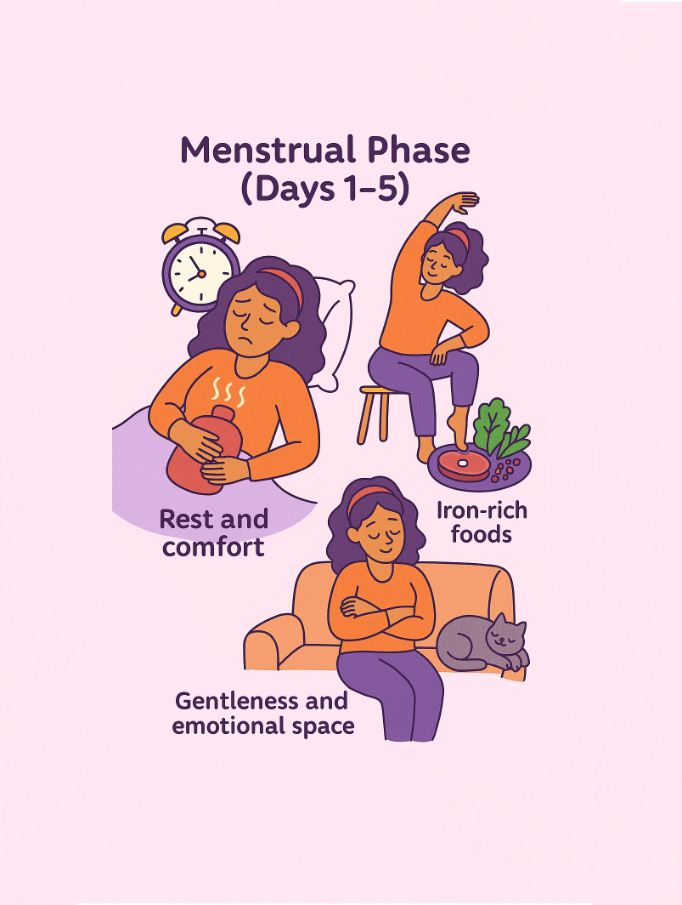
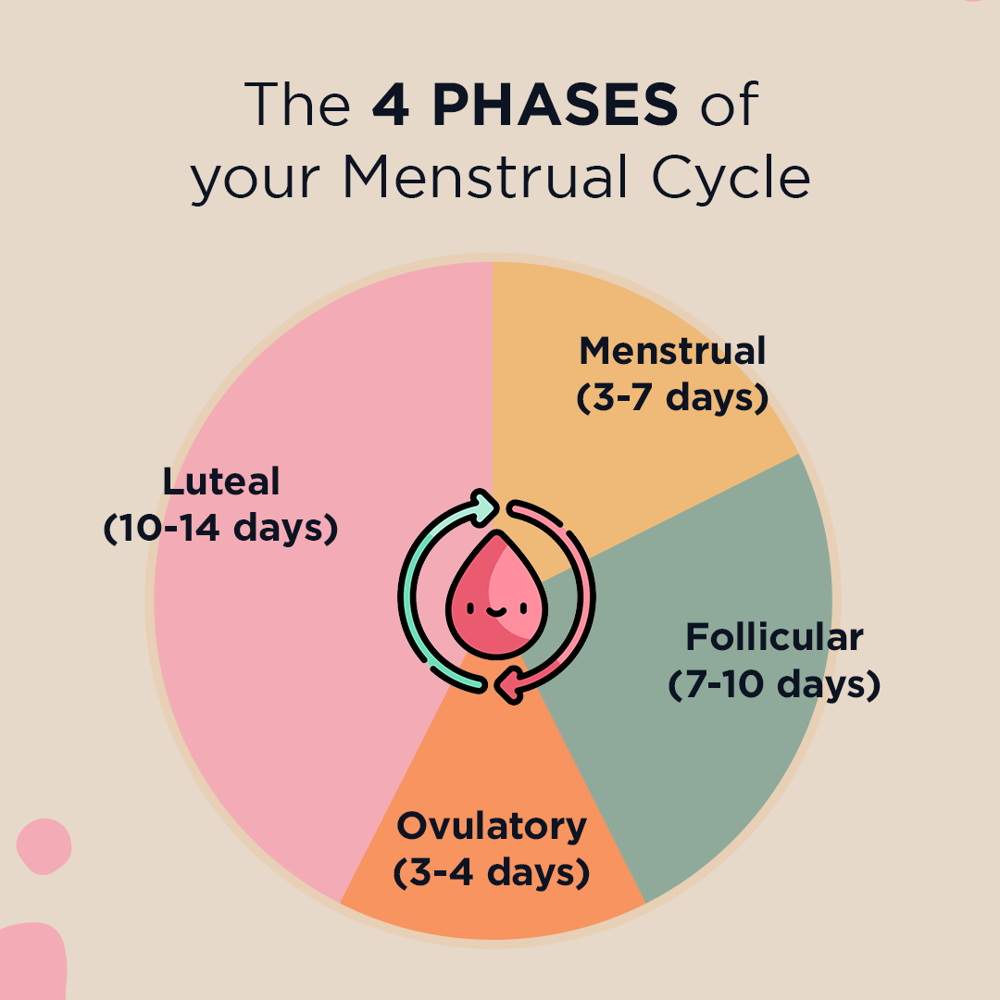
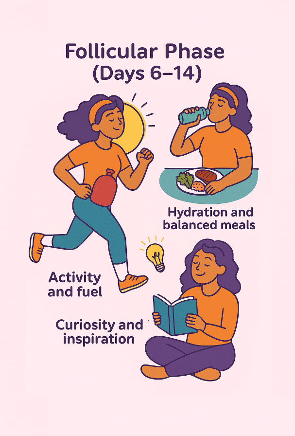
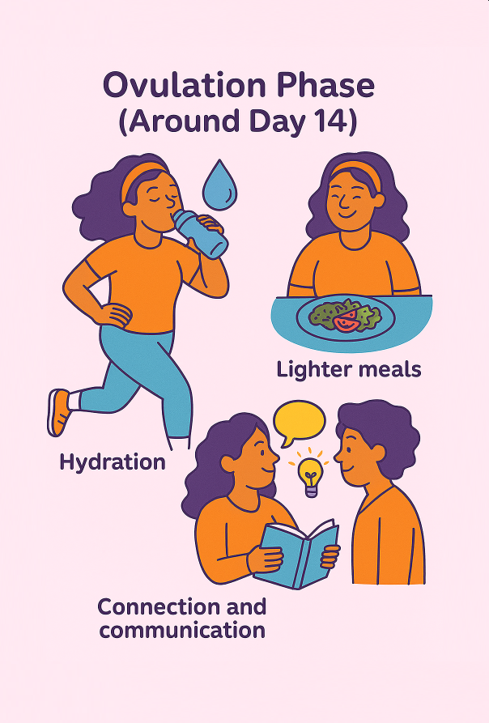
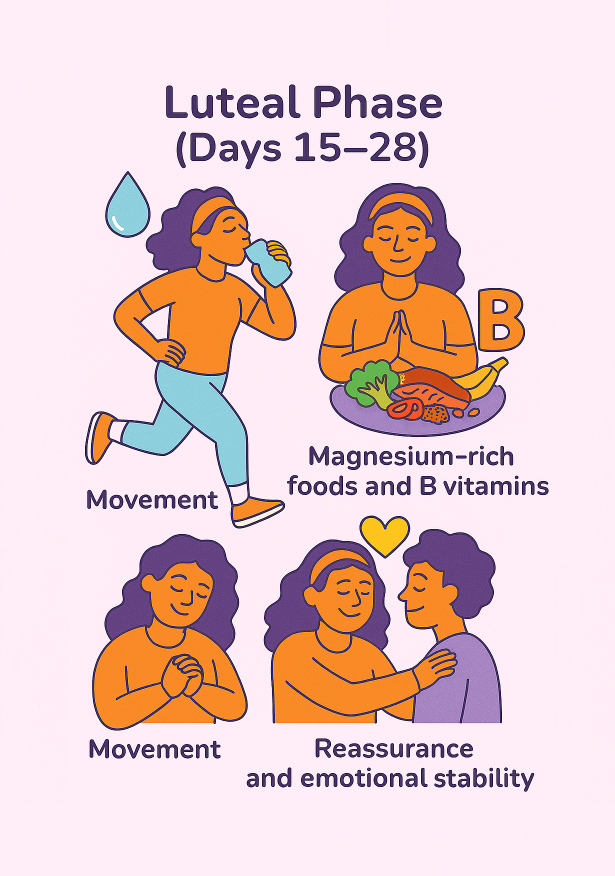
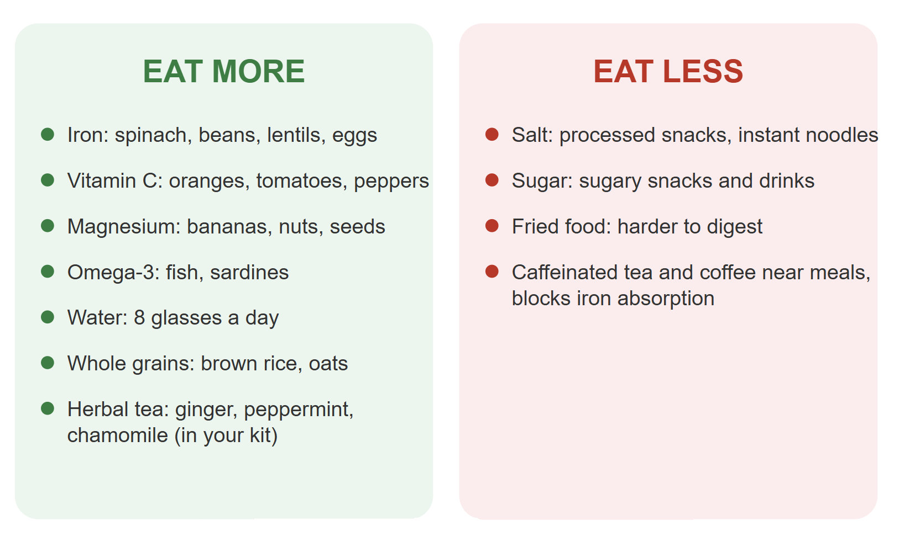

Days 1–5
Menstrual phase
Rest and comfort, iron-rich foods, gentleness and emotional space. The body is shedding — fatigue and cramps are common.


Understanding how your cycle affects your daily routine gives you an upper hand — so you can leverage the highs and navigate the lows.
You already know your rhythm. Now let’s own it.
It’s not just the bleed days.
Your cycle is counted from the first day of one period to the first day of the next, usually 21 to 35 days. It runs in four phases, on repeat, whether or not you’re bleeding that week.

| Phase | Roughly | What’s happening |
|---|---|---|
| Period | Days 1–7 | Uterus lining leaves your body. Energy is often lowest here. |
| Follicular | Days 1–13 | Body prepares an egg. Energy and mood tend to climb. |
| Ovulation | Around day 14 | An egg is released. Many feel most energetic and social here. |
| Luteal | Days 15–28 | Body waits to see if pregnancy begins. Mood, skin, appetite often shift — this is PMS. |
PMS (Premenstrual Syndrome) is a set of physical and emotional symptoms many people experience in the days or week before their period starts: mood changes, bloating, breast tenderness, headaches, fatigue, food cravings, sleep changes, and mild-to-moderate discomfort. Symptoms usually ease once menstruation begins. If they’re severe enough to disrupt daily life, it may be PMDD — worth discussing with a doctor.
Knowing where you are in the cycle explains how you feel that week. No more feeling blindsided every month.

Rest and comfort, iron-rich foods, gentleness and emotional space. The body is shedding — fatigue and cramps are common.

Activity and fuel, hydration and balanced meals, curiosity and inspiration. Energy and mood tend to rise.

Hydration, lighter meals, connection and communication. Many feel most energetic and social here.

Movement, magnesium-rich foods and B vitamins, reassurance and emotional stability. PMS often shows up here.
Pads, liners, cups, tampons — what fits your life.
| Product | Best for | Change every | In your kit? |
|---|---|---|---|
| Panty liners | Daily freshness, light days, discharge | 4–6 hours | Yes, default |
| Pads | Heavier flow, overnight | 4–6 hours | Your kit funds a Dignikit instead |
| Menstrual cups | Lower cost per cycle, less waste, swimming | Every 8–12 hours | Optional upgrade |
| Tampons | Sports, tight clothing, swimming | 4–8 hours | Not yet — ask first |
Not sure what’s right for you? Ask mum or a trusted caregiver.
Cramps, bloating, fatigue, mood swings — all normal.
| Symptom | Why it happens | What helps |
|---|---|---|
| Cramps | Uterus contracts to shed its lining | Heat patch, hot water bottle, gentle movement |
| Fatigue | Iron loss and hormone shifts lower energy | Rest without guilt, iron-rich meals, earlier bedtime, yoga or stretches |
| Bloating | Hormones cause water and salt retention | Less salt, more water, herbal tea |
| Mood swings | Hormone shifts affect brain chemistry | Name the feeling, talk to someone, rest, nourishing food |
| Breakouts | Rising hormones increase oil before your period | Gentle cleansing, avoid picking — usually passes within days |
None of these mean something is wrong with you. They mean it’s worth knowing the line — covered next.
None of these are emergencies to panic over. They’re simply reasons to check in, the same way you would for any other part of your growing body.
Know before it happens.
Tracking also makes it easier to describe changes worth mentioning to a doctor: a cycle that suddenly runs much longer or shorter, or symptoms that are new.
What to eat more of, what to eat less of, and where your kit’s tea fits in.

Iron drops during your period — replacing it keeps fatigue at bay. Pair iron-rich foods with vitamin C so your body absorbs more.
Magnesium relaxes the muscle that causes cramps, and most people don’t get enough through diet alone.
Omega-3s from fish may ease cramp intensity. Water keeps bloating and headaches down.
Caffeinated tea and coffee tighten blood vessels, can worsen cramps, and block iron absorption if taken with meals. Your kit’s herbal teas — ginger, hibiscus, chamomile — are caffeine-free; drink these freely.
A sample day
| Breakfast | Eggs, whole wheat bread, orange slices |
| Lunch | Beans, rice, spinach |
| Snack | Banana, a handful of nuts (watch for allergies), or your kit’s herbal tea |
| Dinner | Lean meat or lentils, leafy greens, a small portion of grains |
| Cycle length, average | 21 to 35 days, tracked start to start |
| Bleed length, average | 3 to 7 days |
| Iron-rich foods | Spinach, beans, lentils, eggs, red meat |
| Pair iron with | Vitamin C: oranges, tomatoes, peppers |
| Ease cramps with | Magnesium foods, heat patch, herbal tea, gentle movement |
| Limit | Salt, sugar, fried food, caffeinated tea and coffee |
| Get help if | Period over 7 days, pain doesn’t ease, a pad soaks in under an hour, unusual smell or itching |
Myth: A normal cycle is always exactly 28 days
Fact: 21 to 35 days is normal. Stress, travel, and illness can shift it further.
Myth: PMS is exaggeration
Fact: PMS is driven by real hormone shifts in the luteal phase. Not in your head, not a character flaw.
Myth: You should push through cramps to prove you’re tough
Fact: Rest and gentle movement both ease cramps. Pain that stops your day is a signal, not a test.
Short, self-graded. Not a test — a confidence check before Module 2 unlocks.
1. Period, follicular, ovulation, luteal
2. Period (menstrual phase)
3. Vitamin C foods — oranges, tomatoes, or peppers
4. Reach out to a trusted adult, doctor, or Ask-HerRhythm — 9 days is past the 7-day marker
5. The QR-linked Cycle Tracker
6. A period is a normal body process, not dirty — or your own words that land the same point